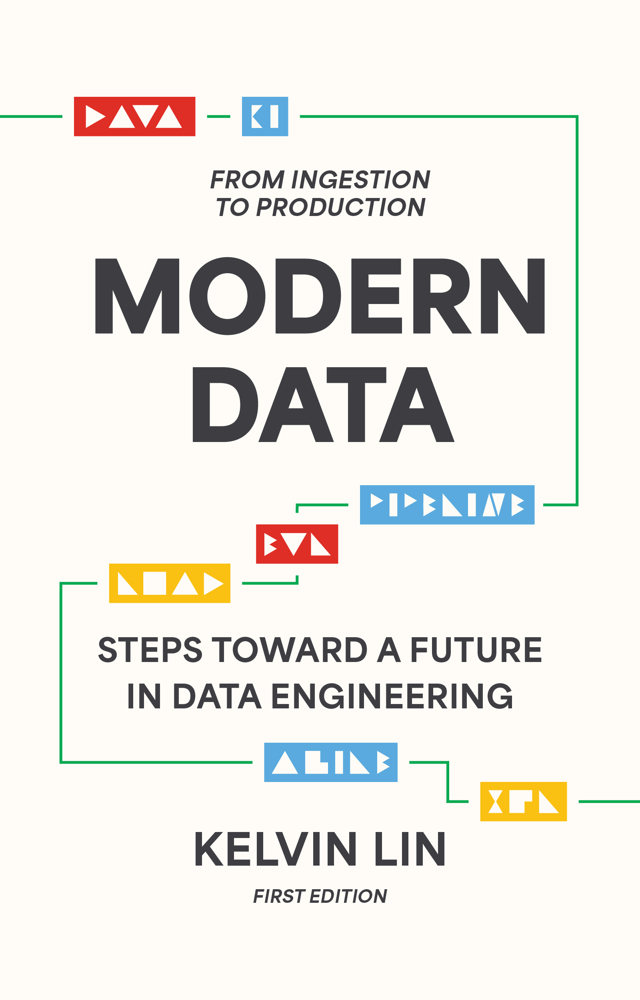

Email
Github
Linkedin
Medium
Substack
Handshake
YouTube
Instagram
Kelvin/Lin.
Media
Experience
Portfolio
Resume
My Channel
YouTube Channel — Kelvin Lin
—
Total Views
—
Lifetime
Watch Time
—
Lifetime
Subscribers
—
Net · Lifetime
Videos
—
Published
Note
These numbers are updated daily using GitHub Actions and Youtube's API. Check back tomorrow for refreshed numbers!
My Book
Get Modern Data: From Ingestion to Production!
Amazon
Ebook / Paperback / Hardcover
↗
Barnes & Noble
Ebook / Paperback / Hardcover
↗
Apple Books
Ebook
↗

Open PDF in new tab
Hover/Click to Read Sample Chapter